Bulk-RNAseq analysis of CAF cell lines
heinin
2025-11-11
Last updated: 2025-11-24
Checks: 5 2
Knit directory: PIPAC_spatial/
This reproducible R Markdown analysis was created with workflowr (version 1.7.1). The Checks tab describes the reproducibility checks that were applied when the results were created. The Past versions tab lists the development history.
The R Markdown is untracked by Git. To know which version of the R
Markdown file created these results, you’ll want to first commit it to
the Git repo. If you’re still working on the analysis, you can ignore
this warning. When you’re finished, you can run
wflow_publish to commit the R Markdown file and build the
HTML.
Great job! The global environment was empty. Objects defined in the global environment can affect the analysis in your R Markdown file in unknown ways. For reproduciblity it’s best to always run the code in an empty environment.
The command set.seed(20240917) was run prior to running
the code in the R Markdown file. Setting a seed ensures that any results
that rely on randomness, e.g. subsampling or permutations, are
reproducible.
Great job! Recording the operating system, R version, and package versions is critical for reproducibility.
Nice! There were no cached chunks for this analysis, so you can be confident that you successfully produced the results during this run.
Using absolute paths to the files within your workflowr project makes it difficult for you and others to run your code on a different machine. Change the absolute path(s) below to the suggested relative path(s) to make your code more reproducible.
| absolute | relative |
|---|---|
| /home/hnatri/PIPAC_spatial/ | . |
| /home/hnatri/PIPAC_spatial/code/PIPAC_colors_themes.R | code/PIPAC_colors_themes.R |
| /home/hnatri/PIPAC_spatial/code/plot_functions.R | code/plot_functions.R |
Great! You are using Git for version control. Tracking code development and connecting the code version to the results is critical for reproducibility.
The results in this page were generated with repository version 2221fdb. See the Past versions tab to see a history of the changes made to the R Markdown and HTML files.
Note that you need to be careful to ensure that all relevant files for
the analysis have been committed to Git prior to generating the results
(you can use wflow_publish or
wflow_git_commit). workflowr only checks the R Markdown
file, but you know if there are other scripts or data files that it
depends on. Below is the status of the Git repository when the results
were generated:
Ignored files:
Ignored: .RData
Ignored: analysis/figure/
Ignored: cell_immune_cluster_marker_annotations.tsv
Ignored: cell_nonimmune_cluster_marker_annotations.tsv
Ignored: celltype_markers.tsv
Ignored: code/.Rhistory
Ignored: code/Proximity_analysis/.DS_Store
Ignored: code/Proximity_analysis/data/
Ignored: code/Proximity_analysis/output/
Ignored: code/RSC_latest_EDM_2025-08-06/
Ignored: code/celltype_proximity_tumor.Rout
Ignored: immune_cluster_marker_annotations_2ndpass.tsv
Ignored: immune_prelim_annot_topmarkers.tsv
Ignored: nonimmune_cluster_marker_annotations_2ndpass.tsv
Ignored: nonimmune_prelim_annot_topmarkers.tsv
Untracked files:
Untracked: analysis/CAF_bulkRNAseq.Rmd
Untracked: analysis/finalize_annotations.Rmd
Untracked: analysis/immune_annotation_cell.Rmd
Untracked: analysis/nonimmune_annotation_cell.Rmd
Untracked: code/.RDataTmp
Untracked: code/.RDataTmp1
Untracked: code/celltype_proximity_09232025.R
Untracked: code/celltype_proximity_tumor.R
Untracked: code/denoist_chunk.R
Untracked: code/plot_informative_cluster_markers.R
Untracked: code/slurm.26717417.err
Untracked: code/slurm.26717417.out
Untracked: enrichment_posttreatment_scores_compiled.tsv
Untracked: enrichment_pretreatment_scores_compiled.tsv
Untracked: enrichment_tumor_scores_compiled.tsv
Untracked: output/enrichment_scores_compiled.tsv
Untracked: output/proximity_compiled.tsv
Untracked: tumor_posttreatment_proximity_compiled.tsv
Untracked: tumor_pretreatment_proximity_compiled.tsv
Untracked: tumor_proximity_compiled.tsv
Unstaged changes:
Deleted: Rplots.pdf
Modified: analysis/Xenium_preprocess_wholecell.Rmd
Modified: analysis/add_metadata.Rmd
Modified: analysis/annotation_cell.Rmd
Modified: analysis/arm3_comparative_analysis.Rmd
Modified: analysis/arm3_prepost_plots_DEGs.Rmd
Modified: analysis/compare_cellular_nuclear.Rmd
Modified: analysis/compare_cellular_nuclear_denoist_annot.Rmd
Modified: analysis/index.Rmd
Modified: analysis/niche_construction_ncells3k_nneighbors20.Rmd
Modified: analysis/pca_variance_decomp.Rmd
Modified: analysis/proximity.Rmd
Modified: analysis/splitting_samples.Rmd
Modified: code/PIPAC_colors_themes.R
Modified: code/anndata_to_seurat.R
Modified: code/denoist.R
Modified: code/pairwise_proximity.R
Modified: code/pairwise_proximity_chunk.R
Modified: code/parse_denoist_res.R
Modified: code/plot_functions.R
Modified: code/run_rscript.sh
Modified: code/seurat_to_anndata.R
Modified: code/update_metadata.R
Note that any generated files, e.g. HTML, png, CSS, etc., are not included in this status report because it is ok for generated content to have uncommitted changes.
There are no past versions. Publish this analysis with
wflow_publish() to start tracking its development.
Packages and environment variables
#install.packages("ggfun", lib="/home/hnatri/R/rstudio-4.3.0-4-with_modules.sif/libs")
#packageurl <- "https://cran.r-project.org/src/contrib/ggfun_0.2.0.tar.gz"
#install.packages(packageurl, repos=NULL, type="source")
#remotes::install_github("YuLab-SMU/aplot", lib="/home/hnatri/R/rstudio-4.3.0-4-with_modules.sif/libs")
#BiocManager::install("clusterProfiler", lib="/home/hnatri/R/rstudio-4.3.0-4-with_modules.sif/libs")
suppressPackageStartupMessages({
library(workflowr)
library(tidyverse)
library(edgeR)
library(limma)
library(plyr)
library(EnhancedVolcano)
library(patchwork)
library(contsurvplot)
library(survival)
library(survminer)
library(googlesheets4)
library(clusterProfiler)
library(org.Hs.eg.db)})Environment variables and helper functions
setwd("/home/hnatri/PIPAC_spatial/")
set.seed(9999)
options(scipen = 99999)
options(ggrepel.max.overlaps = Inf)
source("/home/hnatri/PIPAC_spatial/code/PIPAC_colors_themes.R")
source("/home/hnatri/PIPAC_spatial/code/plot_functions.R")Marker information and metadata
# Cell type markers by group
gs4_deauth()
markers_by_group <- gs4_get("https://docs.google.com/spreadsheets/d/1w0wrL-5KwNEWi_VpmriN7YmfwpBPlEYX0MKlwI2ZQu8/edit?usp=sharing")
markers_by_group <- read_sheet(markers_by_group, sheet = "Markers by group")Import data
# Count data with genes in rows and samples in columns
human_counts <- read.table("/tgen_labs/banovich/Raoof_Appendiceal_Bulk/CAF_celllines/CAF_human_gene_count.tsv",
header = T, sep = "\t")
mouse_counts <- read.table("/tgen_labs/banovich/Raoof_Appendiceal_Bulk/CAF_celllines/CAF_mouse_gene_count.tsv",
header = T, sep = "\t")Human
Preprocessing
all_counts_df <- human_counts
gene_info <- all_counts_df[,grep("gene", colnames(all_counts_df))]
rownames(all_counts_df) <- all_counts_df$gene_id
all_counts_df <- all_counts_df[,grep("COL", colnames(all_counts_df))]
# Excluding ribosomal genes
ribo <- gene_info[grep("^RP", gene_info$gene_name),]
all_counts_df <- all_counts_df[!(row.names(all_counts_df) %in% ribo$gene_id), ]
# Arranging gene info to match the count matrix
gene_info <- gene_info %>%
filter(gene_id %in% rownames(all_counts_df)) %>%
dplyr::arrange(factor(gene_id, levels = rownames(all_counts_df)))
identical(gene_info$gene_id, rownames(all_counts_df))[1] TRUE# Calculating gene length
#gene_info$length <- abs(gene_info$stop - gene_info$start)
# Create DGEList object
d0 <- DGEList(all_counts_df, genes = gene_info)
# Calculate normalization factors
d0 <- calcNormFactors(d0)
d0An object of class "DGEList"
$counts
COL4_V COL5_V COL7_V COL4_MMC COL5_MMC COL7_MMC
ENSG00000115414 1007243 875459 942098 1246953 1010717 941199
ENSG00000108821 713824 978378 892653 843417 853001 852083
ENSG00000164692 454770 702554 655268 560478 728775 682148
ENSG00000113140 287728 297595 286634 357609 340819 315493
ENSG00000133110 298287 340923 256292 274959 348530 246149
23914 more rows ...
$samples
group lib.size norm.factors
COL4_V 1 19959680 0.9453843
COL5_V 1 19966684 0.9826067
COL7_V 1 18390210 0.9819295
COL4_MMC 1 23452779 0.9815971
COL5_MMC 1 21117282 1.0546043
COL7_MMC 1 19024618 1.0590314
$genes
gene_id gene_name gene_chr gene_start gene_end
ENSG00000115414 ENSG00000115414 FN1 2 215360440 215436172
ENSG00000108821 ENSG00000108821 COL1A1 17 50183289 50201632
ENSG00000164692 ENSG00000164692 COL1A2 7 94394561 94431232
ENSG00000113140 ENSG00000113140 SPARC 5 151661096 151687165
ENSG00000133110 ENSG00000133110 POSTN 13 37562583 37598844
gene_strand gene_length gene_biotype
ENSG00000115414 - 17315 protein_coding
ENSG00000108821 - 9819 protein_coding
ENSG00000164692 + 11156 protein_coding
ENSG00000113140 - 4831 protein_coding
ENSG00000133110 - 5464 protein_coding
gene_description
ENSG00000115414 fibronectin 1 [Source:HGNC Symbol;Acc:HGNC:3778]
ENSG00000108821 collagen type I alpha 1 chain [Source:HGNC Symbol;Acc:HGNC:2197]
ENSG00000164692 collagen type I alpha 2 chain [Source:HGNC Symbol;Acc:HGNC:2198]
ENSG00000113140 secreted protein acidic and cysteine rich [Source:HGNC Symbol;Acc:HGNC:11219]
ENSG00000133110 periostin [Source:HGNC Symbol;Acc:HGNC:16953]
23914 more rows ...# Filter low-expressed genes
cutoff <- 1
drop <- which(apply(rpkm(d0, gene.length = "gene_length"), 1, max) < cutoff)
d <- d0[-drop,]
dim(d) # number of genes left[1] 7985 6# Matching sample names with patient metadata
#appendiceal_metadata <- merge(appendiceal_metadata, sample_key, by = "Patient.ID")
#appendiceal_metadata <- appendiceal_metadata %>%
# filter(X2025.HonestBroker.specimen.number %in% colnames(all_counts_df)) %>%
# dplyr::arrange(match(X2025.HonestBroker.specimen.number, colnames(all_counts_df)))
# Dimensionality reduction colored with various metadata
group_info <- sapply(strsplit(colnames(all_counts_df), "_"), `[`, 2)
sample_info <- sapply(strsplit(colnames(all_counts_df), "_"), `[`, 1)
# Set colors and shapes
cols <- c("deeppink3", "cyan4", "yellow3")
#shps <- c(15, 16, 17, 18, 15, 16, 17, 18)
shps <- c(15, 15, 15, 16, 16, 16)
names(cols) <- unique(sample_info)
names(shps) <- group_info
plotMDS(d, top = 500, col = cols, pch = shps, cex = 1, labels = colnames(all_counts_df))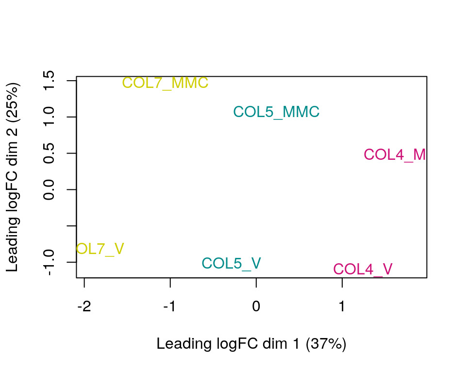
#legend('bottomright', col=cols, legend=unique(sample_info), pch = 16, cex = 0.7)
#legend('topright', legend=unique(group_info), pch = shps, cex = 0.7)# Total number of reads per sample
d$samples %>%
rownames_to_column(var = "sample") %>%
ggplot(aes(x = reorder(sample, -lib.size), y = lib.size)) +
geom_bar(stat = "identity") +
theme_classic() +
theme(axis.text.x = element_text(angle = 45, vjust = 1, hjust = 1)) +
theme(plot.margin = unit(c(0,0,0,1), "cm")) +
xlab("Sample") +
ylab("Library size")
DE analysis
#group_info <- sapply(strsplit(metadata_expression$Sample_Treatment, "_"), `[`, 1)
#sample_info <- c("COL4", "COL5", "COL7", "COL4", "COL5", "COL7")
# Voom transformation and calculation of variance weights.
# Specify the model to be fitted. We do this before using voom since voom uses
# variances of the model residuals (observed - fitted).
# Edit to use the relevant metadata column.
groups <- data.frame(sample_info = sample_info, group_info = group_info)
#group_info2 <- c("V", "V", "MMC", "MMC", "V", "V", "MMC", "MMC")
mm <- model.matrix(~0 + sample_info + group_info)
# Renaming columns
#colnames(mm) <- c("MMC", "V")
# Filtering based on the design matrix
# Defaults: min.count = 10, min.total.count = 15, large.n = 10, min.prop = 0.7
keep <- filterByExpr(d, mm)
d1 <- d[keep,]
# Replotting MDS and library sizes
plotMDS(d1, top = 500, col = cols, pch = shps)
legend('bottomright', col=cols, legend=unique(sample_info), pch = 16, cex = 0.7)
legend('topright', legend=unique(group_info), pch = shps, cex = 0.7)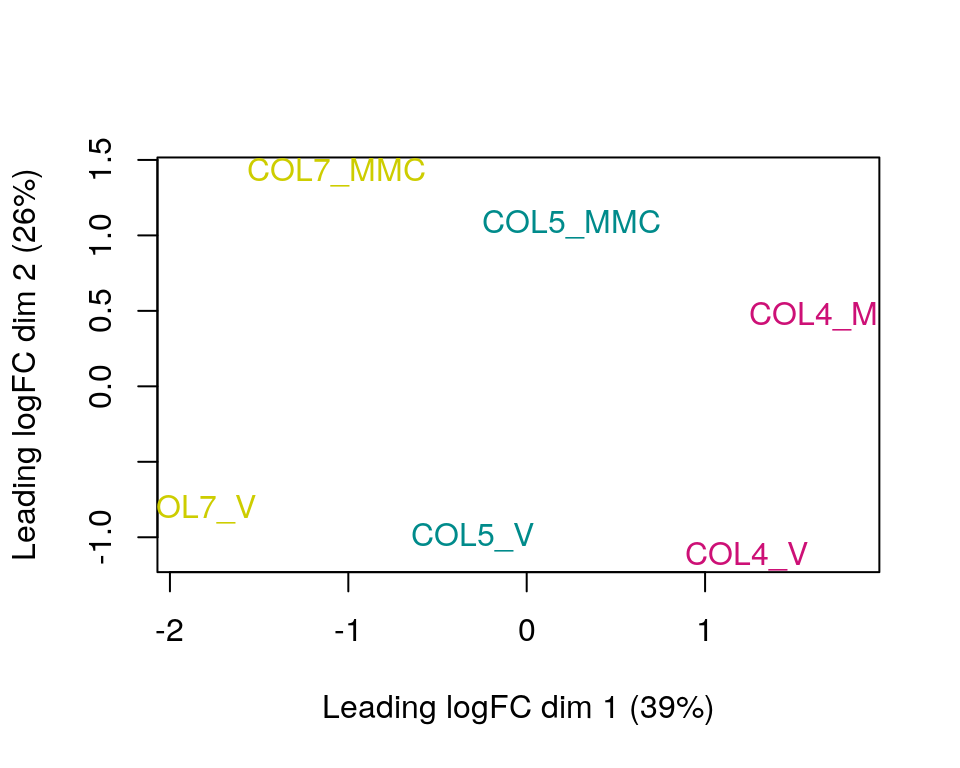
# Total number of reads per sample
d1$samples %>%
rownames_to_column(var = "sample") %>%
ggplot(aes(x = reorder(sample, -lib.size), y = lib.size)) +
geom_bar(stat = "identity") +
theme_classic() +
theme(axis.text.x = element_text(angle = 45, vjust = 1, hjust = 1)) +
theme(plot.margin = unit(c(0,0,0,1), "cm")) +
xlab("Sample") +
ylab("Library size")# The above specifies a model where each coefficient corresponds to a group mean
# Voom
y1 <- voom(d1, mm, plot = T)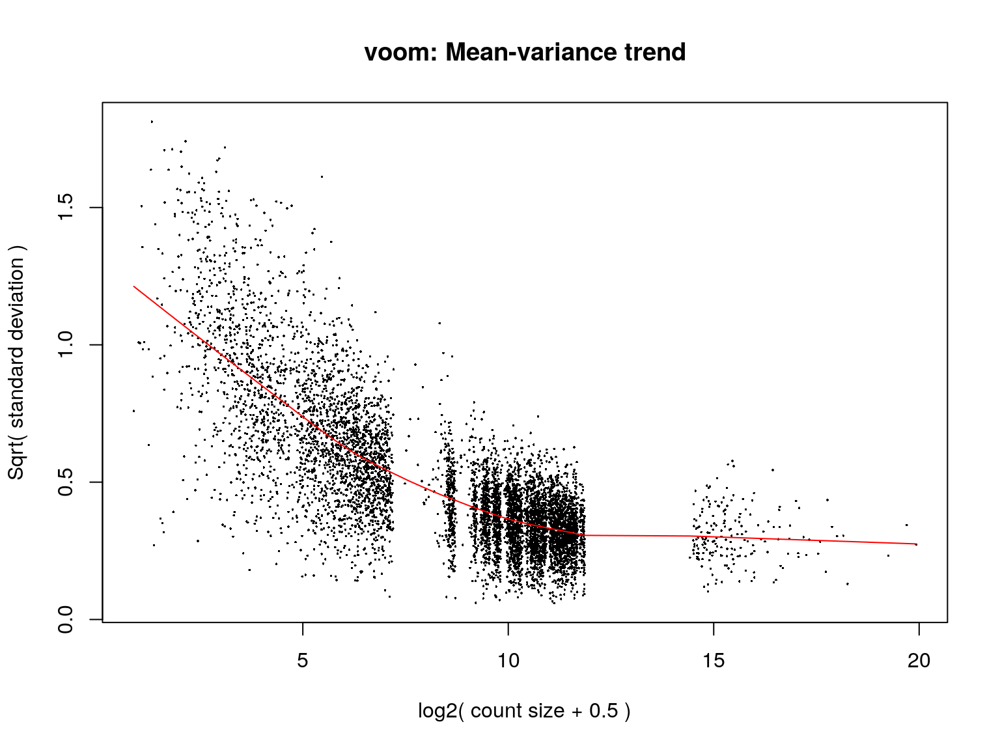
# Fitting linear models in limma
# lmFit fits a linear model using weighted least squares for each gene:
fit1 <- lmFit(y1, mm)
head(coef(fit1)) sample_infoCOL4 sample_infoCOL5 sample_infoCOL7 group_infoV
ENSG00000115414 15.69563 15.43894 15.57209 0.037824285
ENSG00000108821 15.07516 15.30641 15.37147 0.218346846
ENSG00000164692 14.52805 15.02653 15.06073 0.072799456
ENSG00000113140 13.91322 13.89857 13.94779 -0.006725222
ENSG00000133110 13.61773 13.88088 13.55633 0.256695834
ENSG00000137801 13.87324 13.77613 12.91705 0.279704991# Specify comparisons
contr1 <- makeContrasts(colnames(coef(fit1)), levels = colnames(coef(fit1)))
contr1 Contrasts
Levels sample_infoCOL4
sample_infoCOL4 0
sample_infoCOL5 0
sample_infoCOL7 0
group_infoV 1tmp <- contrasts.fit(fit1, contr1)
tmp <- eBayes(tmp)
top.table <- topTable(tmp, sort.by = "P", n = Inf)
top.table$gene_name <- mapvalues(x = rownames(top.table),
from = gene_info$gene_id,
to = gene_info$gene_name)
# Saving all results
write.table(top.table, "/home/hnatri/Raoof_Appendiceal_Bulk/human_MMC_V_res.tsv",
sep = "\t", quote = F, row.names = T)
# Plotting
top_sig <- top.table %>%
filter(adj.P.Val < 0.05 & logFC > 1)
#dplyr::select(gene_name)
p0 <- EnhancedVolcano(top.table,
lab = top.table$gene_name,
x = 'logFC',
y = 'adj.P.Val',
title = "",
subtitle = "",
pCutoff = 0.05,
FCcutoff = 1,
ylim = c(0, max(-log10(top.table[["adj.P.Val"]]), na.rm = TRUE) + 0.5),
caption = "",
titleLabSize = 12,
subtitleLabSize = 2,
legendLabSize = 10,
axisLabSize = 10,
legendIconSize = 3,
labSize = 4)
p0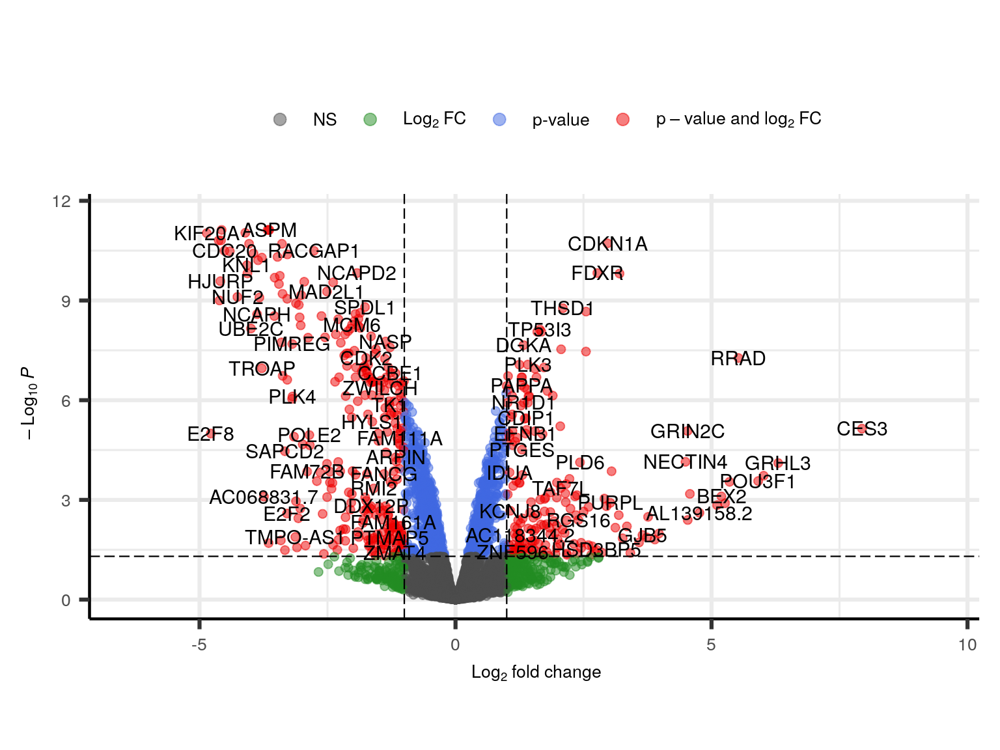
FPKM for each gene
# Calculating FPKM for each gene
metadata_expression <- rpkm(d0, gene.length = "gene_length") %>% t() %>% as.data.frame() %>%
rownames_to_column(var = "Sample_Treatment")
metadata_expression$Sample <- sapply(strsplit(metadata_expression$Sample_Treatment, "_"), `[`, 1)
metadata_expression$Treatment <- sapply(strsplit(metadata_expression$Sample_Treatment, "_"), `[`, 2)
gene_info %>% filter(gene_name == "Tenm4")
# Expression by group
p1 <- metadata_expression %>%
ggplot(aes(x = Treatment, y = ENSMUSG00000048078, fill = Treatment)) +
geom_violin(alpha = 0.5) +
geom_point(position = position_jitter(seed = 1, width = 0.2)) +
ylab("Tenm4 expression (FPKM)") +
xlab("Treatment") +
theme_classic() +
theme(legend.position = "none") +
theme(axis.text.x = element_text(angle = 45, vjust = 1, hjust = 1))
p1Plotting marker genes
# Mouse to human gene names
mouse_human_genes <- read.table("http://www.informatics.jax.org/downloads/reports/HOM_MouseHumanSequence.rpt",
sep="\t", header = T)
mouse <- split.data.frame(mouse_human_genes,mouse_human_genes$Common.Organism.Name)[[2]]
human <- split.data.frame(mouse_human_genes,mouse_human_genes$Common.Organism.Name)[[1]]
mouse <- mouse[,c(1,4)]
human <- human[,c(1,4)]
mh_data <- merge.data.frame(mouse, human, by = "DB.Class.Key",all.y = TRUE)
# Markers to plot
mycafs <- c("TGFB1", "ACTA2", "TAGLN", "HOPX", "MYL9")
icafs <- c("IL6", "CXCL12", "CXCL13", "CXCL14")
abcafs <- c("CD74", "HLA-DPB1", "HLA-DPB2", "HLA-DQA1", "HLA-DRA", "HLA-DRB1")
ficafs <- c("SFRP2", "SFRP4", "COMP", "CXCL14", "PLA2G2A", "ASPN")
all_caf_markers <- c(mycafs, icafs, abcafs, ficafs)
top_sig %>% filter(gene_name %in% all_caf_markers) [1] gene_id gene_name gene_chr gene_start
[5] gene_end gene_strand gene_length gene_biotype
[9] gene_description logFC AveExpr t
[13] P.Value adj.P.Val B
<0 rows> (or 0-length row.names)# FPKM, no filtering
# Create DGEList object
d0 <- DGEList(all_counts_df, genes = gene_info)
# Calculate normalization factors
d0 <- calcNormFactors(d0)
d0An object of class "DGEList"
$counts
COL4_V COL5_V COL7_V COL4_MMC COL5_MMC COL7_MMC
ENSG00000115414 1007243 875459 942098 1246953 1010717 941199
ENSG00000108821 713824 978378 892653 843417 853001 852083
ENSG00000164692 454770 702554 655268 560478 728775 682148
ENSG00000113140 287728 297595 286634 357609 340819 315493
ENSG00000133110 298287 340923 256292 274959 348530 246149
23914 more rows ...
$samples
group lib.size norm.factors
COL4_V 1 19959680 0.9453843
COL5_V 1 19966684 0.9826067
COL7_V 1 18390210 0.9819295
COL4_MMC 1 23452779 0.9815971
COL5_MMC 1 21117282 1.0546043
COL7_MMC 1 19024618 1.0590314
$genes
gene_id gene_name gene_chr gene_start gene_end
ENSG00000115414 ENSG00000115414 FN1 2 215360440 215436172
ENSG00000108821 ENSG00000108821 COL1A1 17 50183289 50201632
ENSG00000164692 ENSG00000164692 COL1A2 7 94394561 94431232
ENSG00000113140 ENSG00000113140 SPARC 5 151661096 151687165
ENSG00000133110 ENSG00000133110 POSTN 13 37562583 37598844
gene_strand gene_length gene_biotype
ENSG00000115414 - 17315 protein_coding
ENSG00000108821 - 9819 protein_coding
ENSG00000164692 + 11156 protein_coding
ENSG00000113140 - 4831 protein_coding
ENSG00000133110 - 5464 protein_coding
gene_description
ENSG00000115414 fibronectin 1 [Source:HGNC Symbol;Acc:HGNC:3778]
ENSG00000108821 collagen type I alpha 1 chain [Source:HGNC Symbol;Acc:HGNC:2197]
ENSG00000164692 collagen type I alpha 2 chain [Source:HGNC Symbol;Acc:HGNC:2198]
ENSG00000113140 secreted protein acidic and cysteine rich [Source:HGNC Symbol;Acc:HGNC:11219]
ENSG00000133110 periostin [Source:HGNC Symbol;Acc:HGNC:16953]
23914 more rows ...# Combining expression and metadata
metadata_expression <- rpkm(d0, gene.length = "gene_length") %>% t() %>% as.data.frame() %>%
rownames_to_column(var = "Sample_Treatment")
metadata_expression$Sample <- sapply(strsplit(metadata_expression$Sample_Treatment, "_"), `[`, 1)
metadata_expression$Treatment <- sapply(strsplit(metadata_expression$Sample_Treatment, "_"), `[`, 2)
long_df <- metadata_expression %>%
pivot_longer(cols = grep("ENS", colnames(metadata_expression), value = T),
names_to = "ensembl", values_to = "exp")
# Adding gene names
long_df$gene <- mapvalues(x = long_df$ensembl,
from = gene_info$gene_id,
to = gene_info$gene_name)
long_df$Hh_gene <- mapvalues(x = long_df$gene,
from = mh_data$Symbol.x,
to = mh_data$Symbol.y)
long_df$Treatment_simple <- ifelse(long_df$Treatment %in% c("V1", "V2"), "V", "MMC")
# Plotting
long_df %>% filter(Hh_gene %in% icafs) %>%
ggplot(aes(x = Treatment_simple, y = exp, color = Treatment_simple, label = Sample)) +
geom_violin(alpha = 0.5) +
geom_point() +
geom_text(hjust=0, vjust=0) +
#geom_line(aes(group = Sample), color = "gray20") +
facet_wrap(~Hh_gene, scales = "free") +
ylab("iCAF expression (FPKM)") +
xlab("") +
theme_classic() +
theme(legend.position = "none") +
theme(axis.text.x = element_text(angle = 45, vjust = 1, hjust = 1))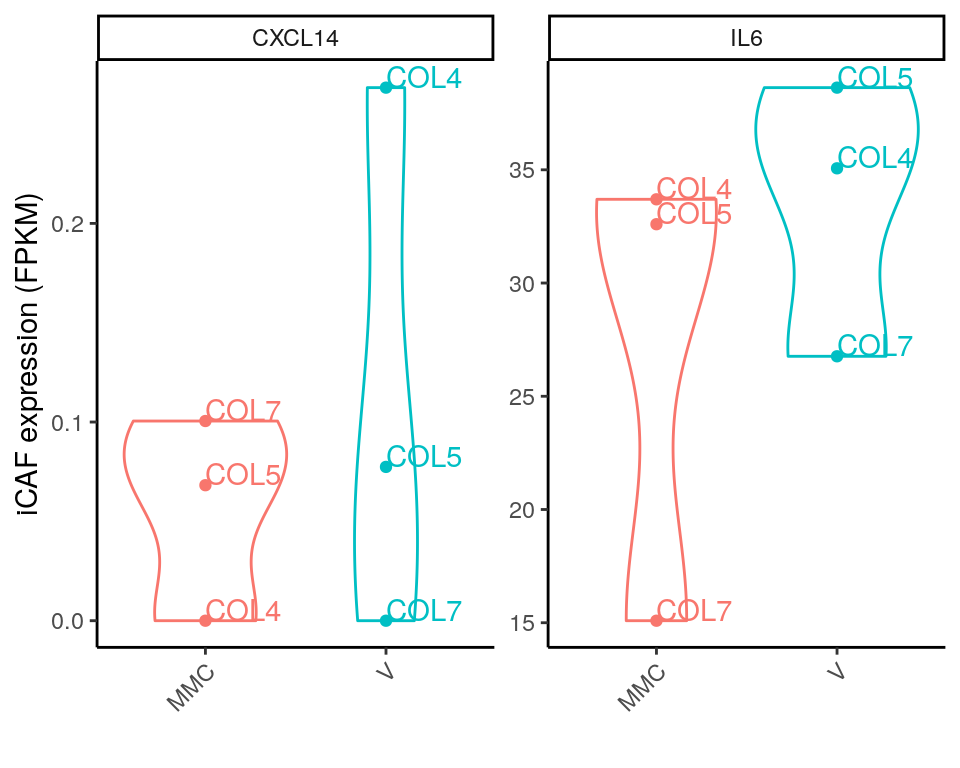
long_df %>% filter(Hh_gene %in% mycafs) %>%
ggplot(aes(x = Treatment_simple, y = exp, color = Treatment_simple, label = Sample)) +
geom_violin(alpha = 0.5) +
geom_point() +
geom_text(hjust=0, vjust=0) +
#geom_line(aes(group = Sample), color = "gray20") +
facet_wrap(~Hh_gene, scales = "free") +
ylab("myCAF expression (FPKM)") +
xlab("") +
theme_classic() +
theme(legend.position = "none") +
theme(axis.text.x = element_text(angle = 45, vjust = 1, hjust = 1))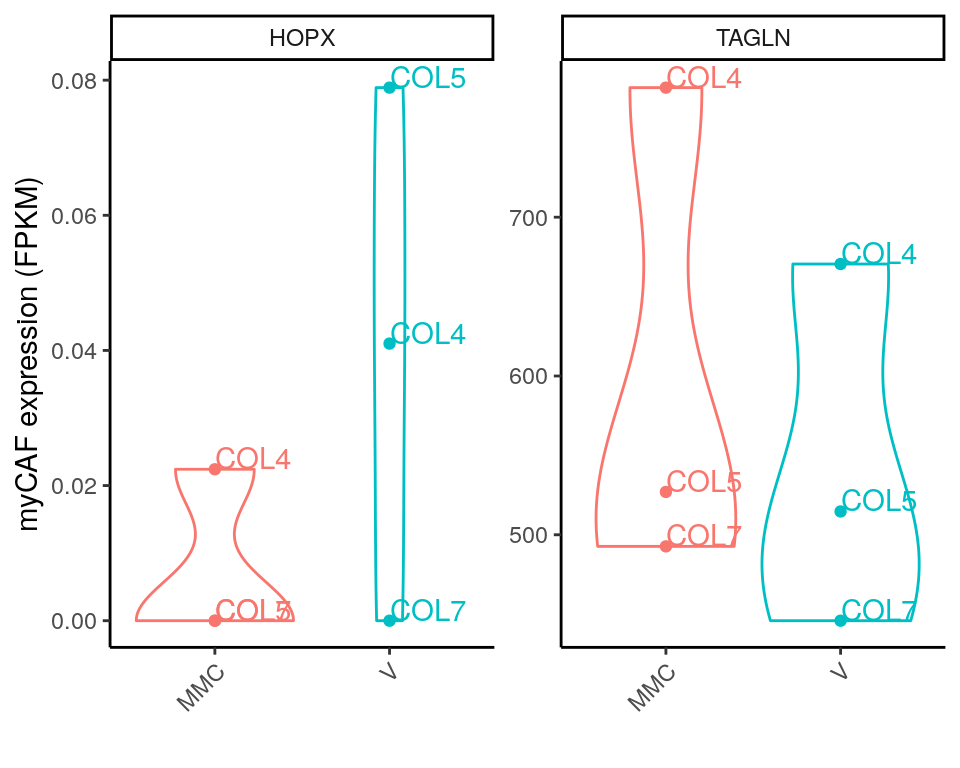
long_df %>% filter(Hh_gene %in% abcafs) %>%
ggplot(aes(x = Treatment_simple, y = exp, color = Treatment_simple, label = Sample)) +
geom_violin(alpha = 0.5) +
geom_point() +
geom_text(hjust=0, vjust=0) +
#geom_line(aes(group = Sample), color = "gray20") +
facet_wrap(~Hh_gene, scales = "free") +
ylab("abCAF expression (FPKM)") +
xlab("") +
theme_classic() +
theme(legend.position = "none") +
theme(axis.text.x = element_text(angle = 45, vjust = 1, hjust = 1))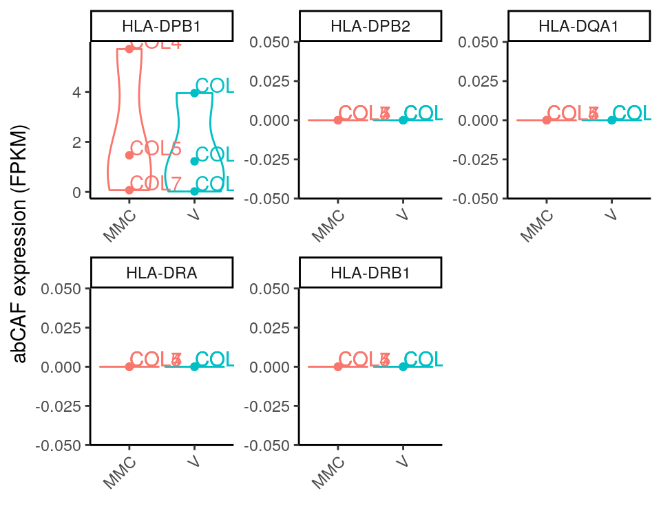
long_df %>% filter(Hh_gene %in% ficafs) %>%
ggplot(aes(x = Treatment_simple, y = exp, color = Treatment_simple, label = Sample)) +
geom_violin(alpha = 0.5) +
geom_point() +
geom_text(hjust=0, vjust=0) +
#geom_line(aes(group = Sample), color = "gray20") +
facet_wrap(~Hh_gene, scales = "free") +
ylab("fiCAF expression (FPKM)") +
xlab("") +
theme_classic() +
theme(legend.position = "none") +
theme(axis.text.x = element_text(angle = 45, vjust = 1, hjust = 1))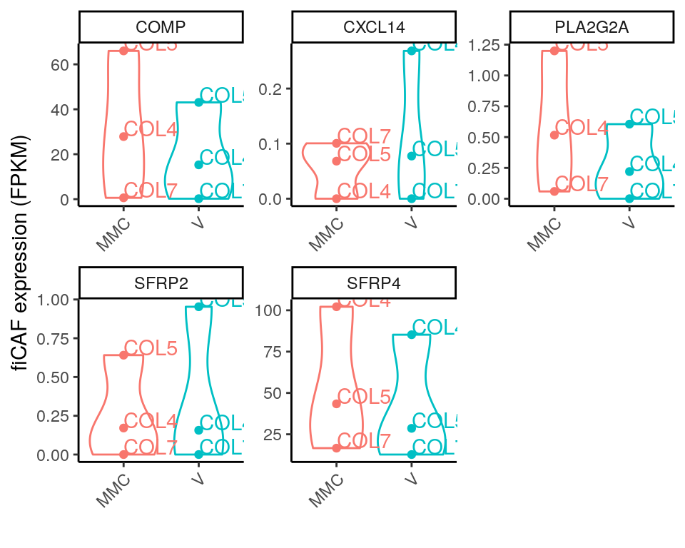
Mouse
Preprocessing
# Excluding ribosomal genes
all_counts_df <- mouse_counts
gene_info <- all_counts_df[,grep("gene", colnames(all_counts_df))]
rownames(all_counts_df) <- all_counts_df$gene_id
all_counts_df <- all_counts_df[,grep("CAF", colnames(all_counts_df))]
ribo <- gene_info[grep("^Rp", gene_info$gene_name),]
all_counts_df <- all_counts_df[!(rownames(all_counts_df) %in% ribo$gene_id), ]
# Arranging gene info to match the count matrix
gene_info <- gene_info %>%
filter(gene_id %in% rownames(all_counts_df)) %>%
dplyr::arrange(factor(gene_id, levels = rownames(all_counts_df)))
identical(gene_info$gene_id, rownames(all_counts_df))[1] TRUE# Calculating gene length
#gene_info$length <- abs(gene_info$stop - gene_info$start)
# Create DGEList object
d0 <- DGEList(all_counts_df, genes = gene_info)
# Calculate normalization factors
d0 <- calcNormFactors(d0)
d0An object of class "DGEList"
$counts
CAF1_V1 CAF1_V2 CAF1_MMC1 CAF1_MMC2 CAF2_V1 CAF2_V2
ENSMUSG00000026193 313278 368553 272989 230151 153189 148543
ENSMUSG00000040152 372316 426808 304702 260705 65276 63117
ENSMUSG00000001506 216965 255796 160159 143006 126065 128695
ENSMUSG00000029661 173567 197616 131673 118101 148318 145185
ENSMUSG00000037742 109253 122688 121259 99121 123691 131161
CAF2_MMC1 CAF2_MMC2
ENSMUSG00000026193 136134 143371
ENSMUSG00000040152 52535 58877
ENSMUSG00000001506 116504 107571
ENSMUSG00000029661 118020 114836
ENSMUSG00000037742 107255 119192
28741 more rows ...
$samples
group lib.size norm.factors
CAF1_V1 1 12175504 0.8866511
CAF1_V2 1 13818374 0.8720662
CAF1_MMC1 1 12434515 0.9373871
CAF1_MMC2 1 10427362 0.9415915
CAF2_V1 1 10341126 1.0687947
CAF2_V2 1 10380767 1.0713266
CAF2_MMC1 1 10245181 1.1215404
CAF2_MMC2 1 10814496 1.1409987
$genes
gene_id gene_name gene_chr gene_start gene_end
ENSMUSG00000026193 ENSMUSG00000026193 Fn1 1 71624679 71692359
ENSMUSG00000040152 ENSMUSG00000040152 Thbs1 2 117942357 117957614
ENSMUSG00000001506 ENSMUSG00000001506 Col1a1 11 94827050 94843868
ENSMUSG00000029661 ENSMUSG00000029661 Col1a2 6 4504814 4541544
ENSMUSG00000037742 ENSMUSG00000037742 Eef1a1 9 78385731 78396433
gene_strand gene_length gene_biotype
ENSMUSG00000026193 - 11685 protein_coding
ENSMUSG00000040152 + 6073 protein_coding
ENSMUSG00000001506 + 6563 protein_coding
ENSMUSG00000029661 + 12426 protein_coding
ENSMUSG00000037742 - 2493 protein_coding
gene_description
ENSMUSG00000026193 fibronectin 1 [Source:MGI Symbol;Acc:MGI:95566]
ENSMUSG00000040152 thrombospondin 1 [Source:MGI Symbol;Acc:MGI:98737]
ENSMUSG00000001506 collagen, type I, alpha 1 [Source:MGI Symbol;Acc:MGI:88467]
ENSMUSG00000029661 collagen, type I, alpha 2 [Source:MGI Symbol;Acc:MGI:88468]
ENSMUSG00000037742 eukaryotic translation elongation factor 1 alpha 1 [Source:MGI Symbol;Acc:MGI:1096881]
28741 more rows ...# Filter low-expressed genes
cutoff <- 1
drop <- which(apply(rpkm(d0, gene.length = "gene_length"), 1, max) < cutoff)
d <- d0[-drop,]
dim(d) # number of genes left[1] 5787 8# Matching sample names with patient metadata
#appendiceal_metadata <- merge(appendiceal_metadata, sample_key, by = "Patient.ID")
#appendiceal_metadata <- appendiceal_metadata %>%
# filter(X2025.HonestBroker.specimen.number %in% colnames(all_counts_df)) %>%
# dplyr::arrange(match(X2025.HonestBroker.specimen.number, colnames(all_counts_df)))
# Dimensionality reduction colored with various metadata
group_info <- sapply(strsplit(colnames(all_counts_df), "_"), `[`, 2)
sample_info <- sapply(strsplit(colnames(all_counts_df), "_"), `[`, 1)
# Set colors and shapes
cols <- c("deeppink3", "cyan4")
shps <- c(15, 16, 17, 18, 15, 16, 17, 18)
#shps <- c(15, 15, 15, 16, 16, 16)
names(cols) <- unique(sample_info)
names(shps) <- unique(group_info)
plotMDS(d, top = 500, pch = shps, col = cols, cex = 1)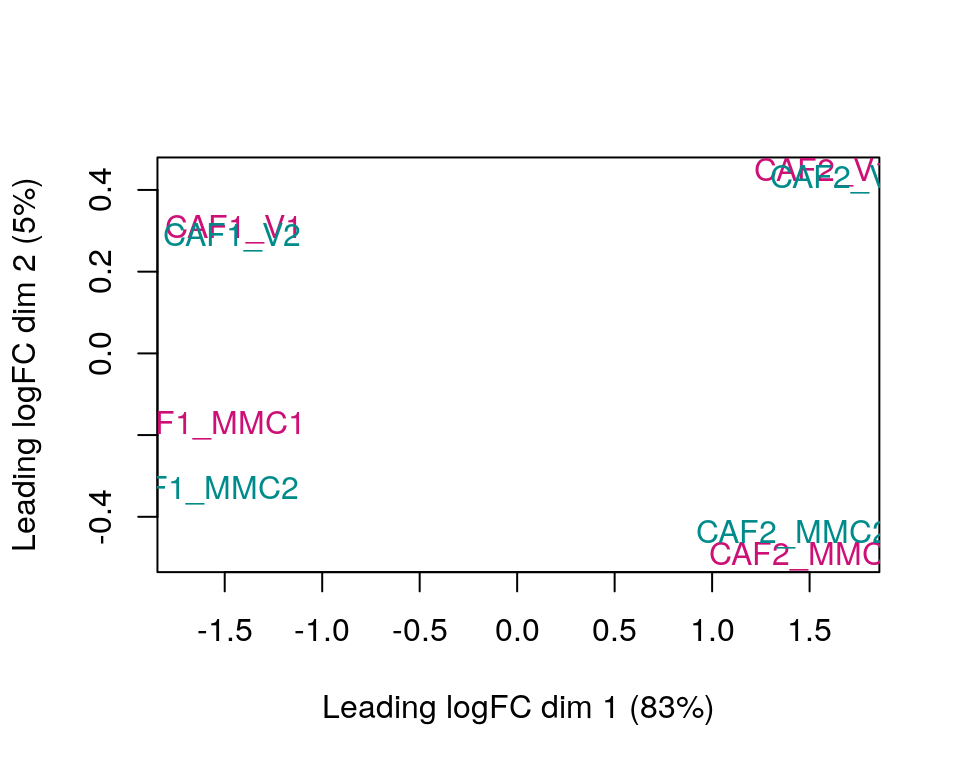
#legend('bottomright', col=cols, legend=unique(sample_info), pch = 16, cex = 0.7)
#legend('topright', legend=unique(group_info), pch = shps, cex = 0.7)# Total number of reads per sample
d$samples %>%
rownames_to_column(var = "sample") %>%
ggplot(aes(x = reorder(sample, -lib.size), y = lib.size)) +
geom_bar(stat = "identity") +
theme_classic() +
theme(axis.text.x = element_text(angle = 45, vjust = 1, hjust = 1)) +
theme(plot.margin = unit(c(0,0,0,1), "cm")) +
xlab("Sample") +
ylab("Library size")
DE analysis
#group_info <- sapply(strsplit(metadata_expression$Sample_Treatment, "_"), `[`, 1)
#sample_info <- c("COL4", "COL5", "COL7", "COL4", "COL5", "COL7")
# Voom transformation and calculation of variance weights.
# Specify the model to be fitted. We do this before using voom since voom uses
# variances of the model residuals (observed - fitted).
# Edit to use the relevant metadata column.
groups <- data.frame(sample_info = sample_info, group_info = group_info)
#group_info2 <- c("V", "V", "MMC", "MMC", "V", "V", "MMC", "MMC")
mm <- model.matrix(~0 + sample_info + group_info)
# Renaming columns
#colnames(mm) <- c("MMC", "V")
# Filtering based on the design matrix
# Defaults: min.count = 10, min.total.count = 15, large.n = 10, min.prop = 0.7
keep <- filterByExpr(d, mm)
d1 <- d[keep,]
# Replotting MDS and library sizes
plotMDS(d1, top = 500, col = cols, pch = shps)
legend('bottomright', col=cols, legend=unique(sample_info), pch = 16, cex = 0.7)
legend('topright', legend=unique(group_info), pch = shps, cex = 0.7)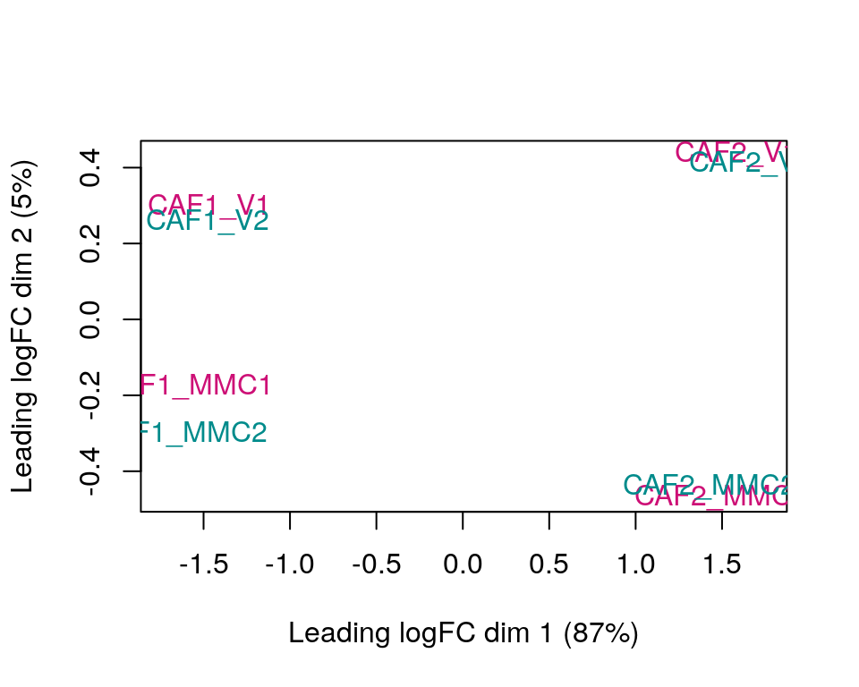
# Total number of reads per sample
d1$samples %>%
rownames_to_column(var = "sample") %>%
ggplot(aes(x = reorder(sample, -lib.size), y = lib.size)) +
geom_bar(stat = "identity") +
theme_classic() +
theme(axis.text.x = element_text(angle = 45, vjust = 1, hjust = 1)) +
theme(plot.margin = unit(c(0,0,0,1), "cm")) +
xlab("Sample") +
ylab("Library size")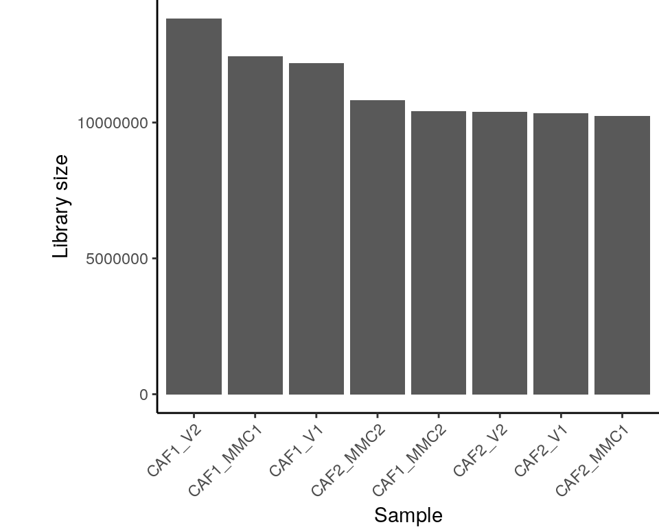
# The above specifies a model where each coefficient corresponds to a group mean
# Voom
y1 <- voom(d1, mm, plot = T)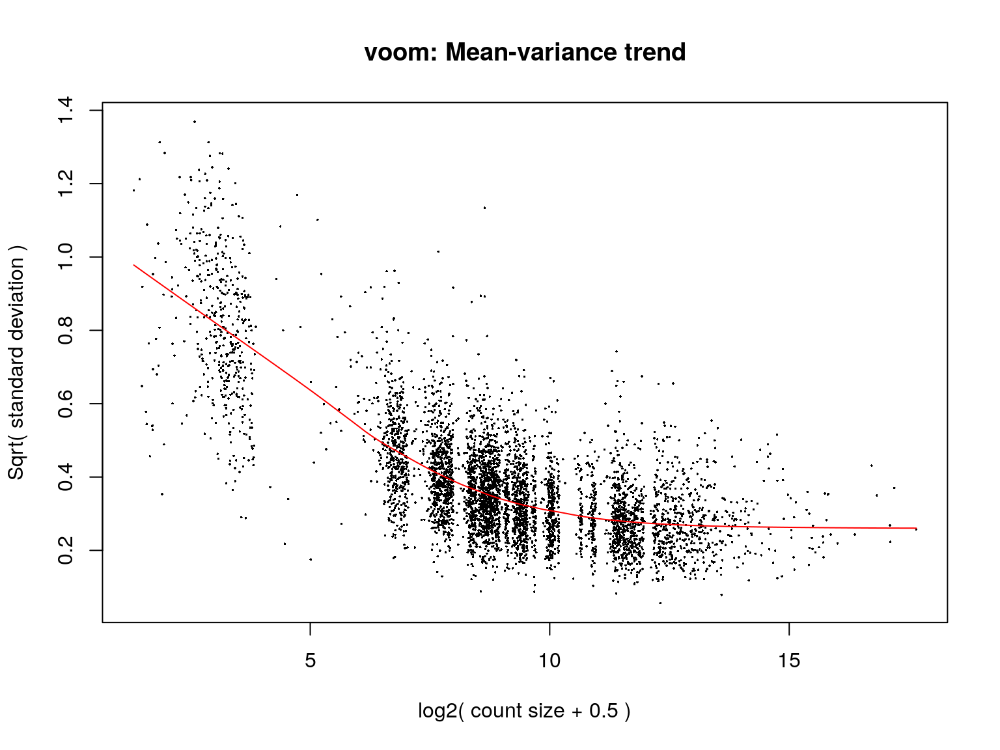
# Fitting linear models in limma
# lmFit fits a linear model using weighted least squares for each gene:
fit1 <- lmFit(y1, mm)
head(coef(fit1)) sample_infoCAF1 sample_infoCAF2 group_infoMMC2 group_infoV1
ENSMUSG00000026193 14.55596 13.49168 -0.013386837 0.2678738
ENSMUSG00000040152 14.68862 12.14376 0.041897683 0.3847080
ENSMUSG00000001506 13.88551 13.16751 -0.066494772 0.3597286
ENSMUSG00000029661 13.53204 13.25772 -0.025779061 0.4475282
ENSMUSG00000037742 13.24935 13.28372 0.002962901 0.1110102
ENSMUSG00000119584 13.82740 12.97272 -0.383403805 -0.1085237
group_infoV2
ENSMUSG00000026193 0.2791414
ENSMUSG00000040152 0.3755523
ENSMUSG00000001506 0.4096242
ENSMUSG00000029661 0.4419613
ENSMUSG00000037742 0.1531156
ENSMUSG00000119584 -0.2013886# Specify comparisons
contr1 <- makeContrasts(colnames(coef(fit1)), levels = colnames(coef(fit1)))
contr1 Contrasts
Levels sample_infoCAF1
sample_infoCAF1 0
sample_infoCAF2 0
group_infoMMC2 0
group_infoV1 0
group_infoV2 1tmp <- contrasts.fit(fit1, contr1)
tmp <- eBayes(tmp)
top.table.mouse <- topTable(tmp, sort.by = "P", n = Inf)
top.table.mouse$gene_name <- mapvalues(x = rownames(top.table.mouse),
from = gene_info$gene_id,
to = gene_info$gene_name)
# Saving all results
write.table(top.table.mouse, "/home/hnatri/Raoof_Appendiceal_Bulk/mouse_MMC_V_res.tsv",
sep = "\t", quote = F, row.names = T)
# Plotting
top_sig <- top.table.mouse %>%
filter(adj.P.Val < 0.05 & logFC > 1)
#dplyr::select(gene_name)
p0 <- EnhancedVolcano(top.table.mouse,
lab = top.table.mouse$gene_name,
x = 'logFC',
y = 'adj.P.Val',
title = "",
subtitle = "",
pCutoff = 0.05,
FCcutoff = 1,
ylim = c(0, max(-log10(top.table.mouse[["adj.P.Val"]]), na.rm = TRUE) + 0.5),
caption = "",
titleLabSize = 12,
subtitleLabSize = 2,
legendLabSize = 10,
axisLabSize = 10,
legendIconSize = 3,
labSize = 4)
p0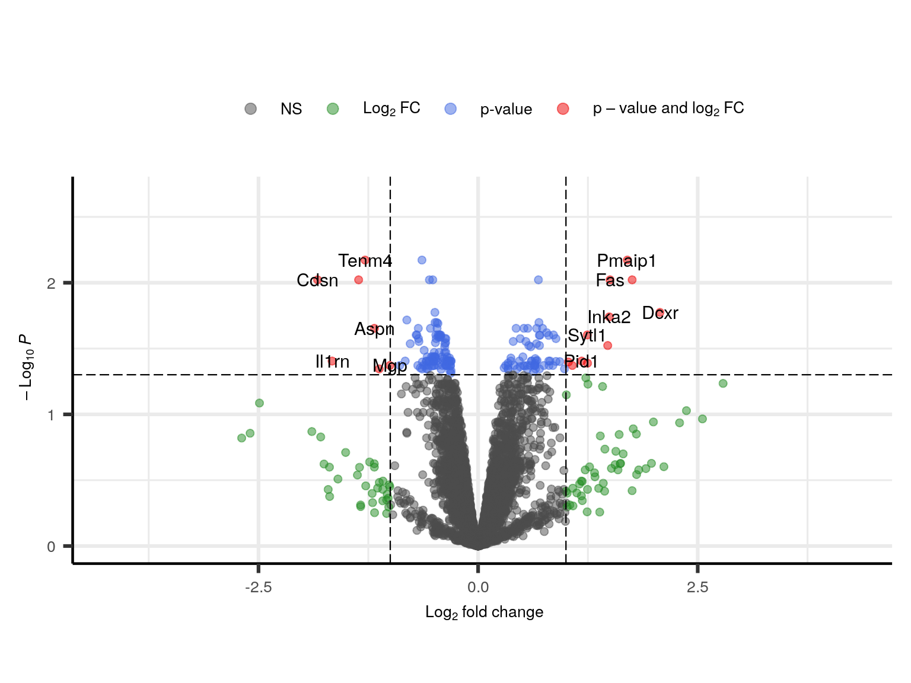
FPKM for each gene
# Calculating FPKM for each gene
metadata_expression <- rpkm(d0, gene.length = "gene_length") %>% t() %>% as.data.frame() %>%
rownames_to_column(var = "Sample_Treatment")
metadata_expression$Sample <- sapply(strsplit(metadata_expression$Sample_Treatment, "_"), `[`, 1)
metadata_expression$Treatment <- sapply(strsplit(metadata_expression$Sample_Treatment, "_"), `[`, 2)
gene_info %>% filter(gene_name == "Tenm4")
# Expression by group
p1 <- metadata_expression %>%
ggplot(aes(x = Treatment, y = ENSMUSG00000048078, fill = Treatment)) +
geom_violin(alpha = 0.5) +
geom_point(position = position_jitter(seed = 1, width = 0.2)) +
ylab("Tenm4 expression (FPKM)") +
xlab("Treatment") +
theme_classic() +
theme(legend.position = "none") +
theme(axis.text.x = element_text(angle = 45, vjust = 1, hjust = 1))
p1Plotting marker genes
# Mouse to human gene names
# Converting human gene names to mouse
mouse_human_genes <- read.table("http://www.informatics.jax.org/downloads/reports/HOM_MouseHumanSequence.rpt",
sep="\t", header = T)
mouse <- split.data.frame(mouse_human_genes,mouse_human_genes$Common.Organism.Name)[[2]]
human <- split.data.frame(mouse_human_genes,mouse_human_genes$Common.Organism.Name)[[1]]
mouse <- mouse[,c(1,4)]
human <- human[,c(1,4)]
mh_data <- merge.data.frame(mouse, human, by = "DB.Class.Key",all.y = TRUE)
# Markers to plot
mycafs <- c("TGFB1", "ACTA2", "TAGLN", "HOPX", "MYL9")
icafs <- c("IL6", "CXCL12", "CXCL13", "CXCL14")
abcafs <- c("CD74", "HLA-DPB1", "HLA-DPB2", "HLA-DQA1", "HLA-DRA", "HLA-DRB1")
ficafs <- c("SFRP2", "SFRP4", "COMP", "CXCL14", "PLA2G2A", "ASPN")
all_caf_markers <- c(mycafs, icafs, abcafs, ficafs)
top_sig %>% filter(gene_name %in% all_caf_markers) [1] gene_id gene_name gene_chr gene_start
[5] gene_end gene_strand gene_length gene_biotype
[9] gene_description logFC AveExpr t
[13] P.Value adj.P.Val B
<0 rows> (or 0-length row.names)# FPKM, no filtering
# Create DGEList object
d0 <- DGEList(all_counts_df, genes = gene_info)
# Calculate normalization factors
d0 <- calcNormFactors(d0)
d0An object of class "DGEList"
$counts
CAF1_V1 CAF1_V2 CAF1_MMC1 CAF1_MMC2 CAF2_V1 CAF2_V2
ENSMUSG00000026193 313278 368553 272989 230151 153189 148543
ENSMUSG00000040152 372316 426808 304702 260705 65276 63117
ENSMUSG00000001506 216965 255796 160159 143006 126065 128695
ENSMUSG00000029661 173567 197616 131673 118101 148318 145185
ENSMUSG00000037742 109253 122688 121259 99121 123691 131161
CAF2_MMC1 CAF2_MMC2
ENSMUSG00000026193 136134 143371
ENSMUSG00000040152 52535 58877
ENSMUSG00000001506 116504 107571
ENSMUSG00000029661 118020 114836
ENSMUSG00000037742 107255 119192
28741 more rows ...
$samples
group lib.size norm.factors
CAF1_V1 1 12175504 0.8866511
CAF1_V2 1 13818374 0.8720662
CAF1_MMC1 1 12434515 0.9373871
CAF1_MMC2 1 10427362 0.9415915
CAF2_V1 1 10341126 1.0687947
CAF2_V2 1 10380767 1.0713266
CAF2_MMC1 1 10245181 1.1215404
CAF2_MMC2 1 10814496 1.1409987
$genes
gene_id gene_name gene_chr gene_start gene_end
ENSMUSG00000026193 ENSMUSG00000026193 Fn1 1 71624679 71692359
ENSMUSG00000040152 ENSMUSG00000040152 Thbs1 2 117942357 117957614
ENSMUSG00000001506 ENSMUSG00000001506 Col1a1 11 94827050 94843868
ENSMUSG00000029661 ENSMUSG00000029661 Col1a2 6 4504814 4541544
ENSMUSG00000037742 ENSMUSG00000037742 Eef1a1 9 78385731 78396433
gene_strand gene_length gene_biotype
ENSMUSG00000026193 - 11685 protein_coding
ENSMUSG00000040152 + 6073 protein_coding
ENSMUSG00000001506 + 6563 protein_coding
ENSMUSG00000029661 + 12426 protein_coding
ENSMUSG00000037742 - 2493 protein_coding
gene_description
ENSMUSG00000026193 fibronectin 1 [Source:MGI Symbol;Acc:MGI:95566]
ENSMUSG00000040152 thrombospondin 1 [Source:MGI Symbol;Acc:MGI:98737]
ENSMUSG00000001506 collagen, type I, alpha 1 [Source:MGI Symbol;Acc:MGI:88467]
ENSMUSG00000029661 collagen, type I, alpha 2 [Source:MGI Symbol;Acc:MGI:88468]
ENSMUSG00000037742 eukaryotic translation elongation factor 1 alpha 1 [Source:MGI Symbol;Acc:MGI:1096881]
28741 more rows ...# Combining expression and metadata
metadata_expression <- rpkm(d0, gene.length = "gene_length") %>% t() %>% as.data.frame() %>%
rownames_to_column(var = "Sample_Treatment")
metadata_expression$Sample <- sapply(strsplit(metadata_expression$Sample_Treatment, "_"), `[`, 1)
metadata_expression$Treatment <- sapply(strsplit(metadata_expression$Sample_Treatment, "_"), `[`, 2)
long_df <- metadata_expression %>%
pivot_longer(cols = grep("ENS", colnames(metadata_expression), value = T),
names_to = "ensembl", values_to = "exp")
# Adding gene names
long_df$gene <- mapvalues(x = long_df$ensembl,
from = gene_info$gene_id,
to = gene_info$gene_name)
long_df$Hh_gene <- mapvalues(x = long_df$gene,
from = mh_data$Symbol.x,
to = mh_data$Symbol.y)
long_df$Treatment_simple <- ifelse(long_df$Treatment %in% c("V1", "V2"), "V", "MMC")
# Plotting
long_df %>% filter(Hh_gene %in% icafs) %>%
ggplot(aes(x = Treatment_simple, y = exp, color = Treatment_simple, label = Sample)) +
geom_violin(alpha = 0.5) +
geom_point() +
geom_text(hjust=0, vjust=0) +
#geom_line(aes(group = Sample), color = "gray20") +
facet_wrap(~Hh_gene, scales = "free") +
ylab("iCAF expression (FPKM)") +
xlab("") +
theme_classic() +
theme(legend.position = "none") +
theme(axis.text.x = element_text(angle = 45, vjust = 1, hjust = 1))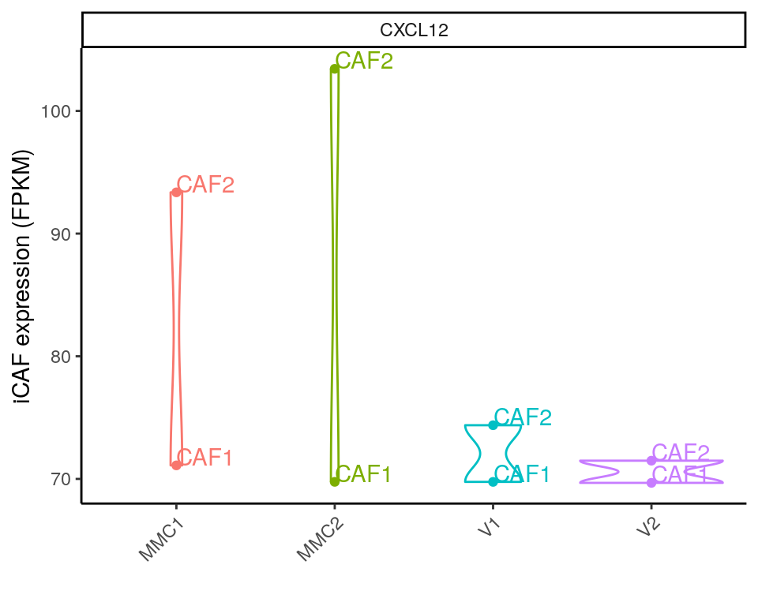
long_df %>% filter(Hh_gene %in% mycafs) %>%
ggplot(aes(x = Treatment_simple, y = exp, color = Treatment_simple, label = Sample)) +
geom_violin(alpha = 0.5) +
geom_point() +
geom_text(hjust=0, vjust=0) +
#geom_line(aes(group = Sample), color = "gray20") +
facet_wrap(~Hh_gene, scales = "free") +
ylab("myCAF expression (FPKM)") +
xlab("") +
theme_classic() +
theme(legend.position = "none") +
theme(axis.text.x = element_text(angle = 45, vjust = 1, hjust = 1))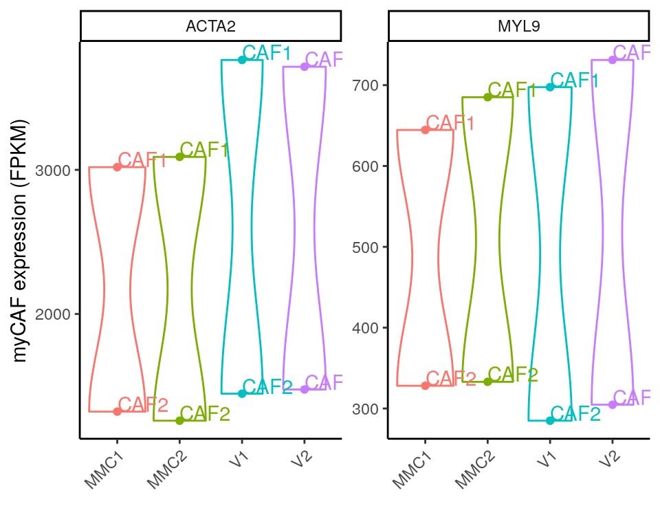
long_df %>% filter(Hh_gene %in% abcafs) %>%
ggplot(aes(x = Treatment_simple, y = exp, color = Treatment_simple, label = Sample)) +
geom_violin(alpha = 0.5) +
geom_point() +
geom_text(hjust=0, vjust=0) +
#geom_line(aes(group = Sample), color = "gray20") +
facet_wrap(~Hh_gene, scales = "free") +
ylab("abCAF expression (FPKM)") +
xlab("") +
theme_classic() +
theme(legend.position = "none") +
theme(axis.text.x = element_text(angle = 45, vjust = 1, hjust = 1))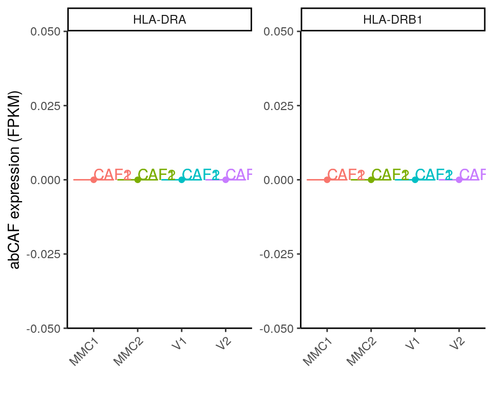
long_df %>% filter(Hh_gene %in% ficafs) %>%
ggplot(aes(x = Treatment_simple, y = exp, color = Treatment_simple, label = Sample)) +
geom_violin(alpha = 0.5) +
geom_point() +
geom_text(hjust=0, vjust=0) +
#geom_line(aes(group = Sample), color = "gray20") +
facet_wrap(~Hh_gene, scales = "free") +
ylab("fiCAF expression (FPKM)") +
xlab("") +
theme_classic() +
theme(legend.position = "none") +
theme(axis.text.x = element_text(angle = 45, vjust = 1, hjust = 1))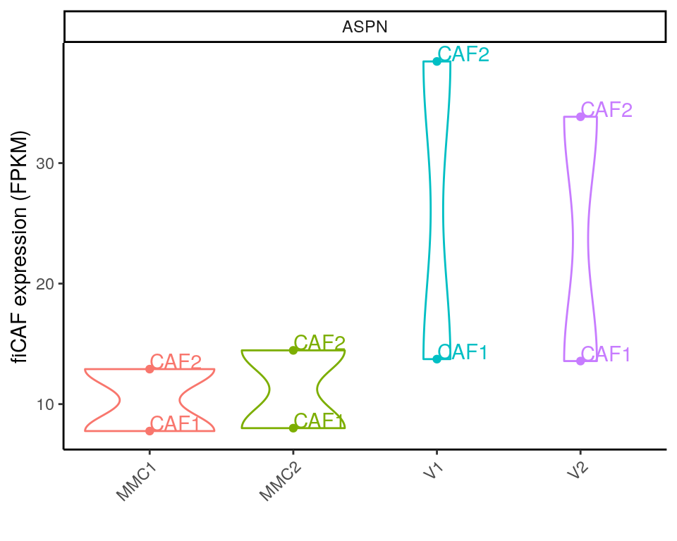
Pathway enrichment
# Ordering genes
gse_input <- top.table %>%
filter(adj.P.Val < 0.1)
gse <- enrichGO(gse_input$gene_id,
ont ="BP",
keyType = "ENSEMBL",
minGSSize = 3,
maxGSSize = 800,
pvalueCutoff = 0.05,
universe = top.table$gene_id,
OrgDb = org.Hs.eg.db,
pAdjustMethod = "BH")
dotplot(gse, showCategory=30, font.size=10, color="qvalue") +
theme(legend.text=element_text(size=5),
legend.position = "top",
legend.box = "vertical",
text = element_text(size=6))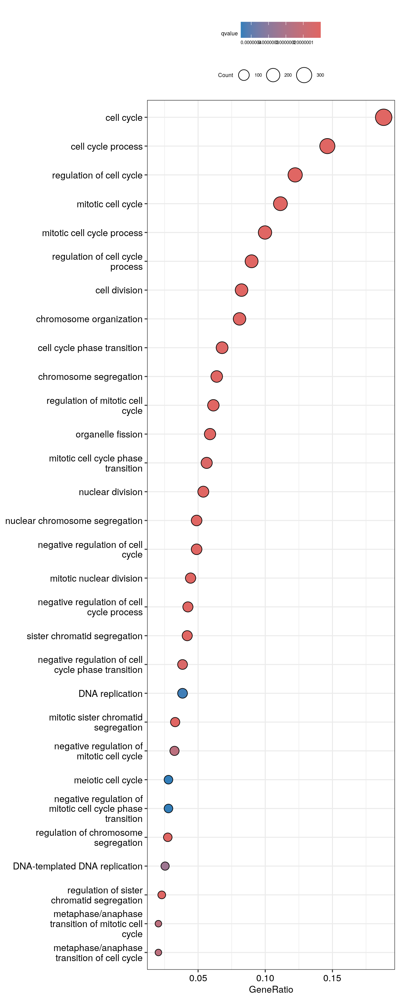
sessionInfo()R version 4.3.0 (2023-04-21)
Platform: x86_64-pc-linux-gnu (64-bit)
Running under: Ubuntu 22.04.3 LTS
Matrix products: default
BLAS: /usr/lib/x86_64-linux-gnu/openblas-pthread/libblas.so.3
LAPACK: /usr/lib/x86_64-linux-gnu/openblas-pthread/libopenblasp-r0.3.20.so; LAPACK version 3.10.0
locale:
[1] LC_CTYPE=en_US.UTF-8 LC_NUMERIC=C
[3] LC_TIME=en_US.UTF-8 LC_COLLATE=en_US.UTF-8
[5] LC_MONETARY=en_US.UTF-8 LC_MESSAGES=en_US.UTF-8
[7] LC_PAPER=en_US.UTF-8 LC_NAME=C
[9] LC_ADDRESS=C LC_TELEPHONE=C
[11] LC_MEASUREMENT=en_US.UTF-8 LC_IDENTIFICATION=C
time zone: Etc/UTC
tzcode source: system (glibc)
attached base packages:
[1] grid stats4 stats graphics grDevices utils datasets
[8] methods base
other attached packages:
[1] ComplexHeatmap_2.18.0 viridis_0.6.3
[3] viridisLite_0.4.2 Seurat_5.0.1
[5] SeuratObject_5.0.2 sp_1.6-1
[7] circlize_0.4.15 RColorBrewer_1.1-3
[9] org.Hs.eg.db_3.18.0 AnnotationDbi_1.64.1
[11] IRanges_2.36.0 S4Vectors_0.40.2
[13] Biobase_2.62.0 BiocGenerics_0.48.1
[15] clusterProfiler_4.13.0.004 googlesheets4_1.1.0
[17] survminer_0.4.9 ggpubr_0.6.0
[19] survival_3.5-5 contsurvplot_0.2.0
[21] patchwork_1.1.2 EnhancedVolcano_1.20.0
[23] ggrepel_0.9.3 plyr_1.8.8
[25] edgeR_4.0.16 limma_3.58.1
[27] lubridate_1.9.2 forcats_1.0.0
[29] stringr_1.5.0 dplyr_1.1.2
[31] purrr_1.0.2 readr_2.1.4
[33] tidyr_1.3.0 tibble_3.2.1
[35] ggplot2_3.4.2 tidyverse_2.0.0
[37] workflowr_1.7.1
loaded via a namespace (and not attached):
[1] spatstat.sparse_3.0-1 matrixStats_1.0.0 fs_1.6.2
[4] bitops_1.0-7 enrichplot_1.22.0 doParallel_1.0.17
[7] HDO.db_0.99.1 httr_1.4.6 sctransform_0.4.1
[10] tools_4.3.0 backports_1.4.1 utf8_1.2.3
[13] R6_2.5.1 uwot_0.1.14 lazyeval_0.2.2
[16] GetoptLong_1.0.5 withr_2.5.0 gridExtra_2.3
[19] progressr_0.13.0 cli_3.6.1 spatstat.explore_3.2-1
[22] fastDummies_1.7.3 scatterpie_0.2.1 labeling_0.4.2
[25] sass_0.4.6 spatstat.data_3.0-1 survMisc_0.5.6
[28] pbapply_1.7-0 ggridges_0.5.4 yulab.utils_0.2.1.002
[31] gson_0.1.0 DOSE_3.28.2 parallelly_1.36.0
[34] rstudioapi_0.14 RSQLite_2.3.1 generics_0.1.3
[37] gridGraphics_0.5-1 shape_1.4.6 spatstat.random_3.1-5
[40] ica_1.0-3 car_3.1-2 GO.db_3.18.0
[43] Matrix_1.6-5 fansi_1.0.4 abind_1.4-5
[46] lifecycle_1.0.3 whisker_0.4.1 yaml_2.3.7
[49] carData_3.0-5 qvalue_2.36.0 Rtsne_0.16
[52] blob_1.2.4 promises_1.2.0.1 crayon_1.5.2
[55] miniUI_0.1.1.1 lattice_0.21-8 cowplot_1.1.1
[58] KEGGREST_1.42.0 pillar_1.9.0 knitr_1.43
[61] fgsea_1.28.0 rjson_0.2.21 future.apply_1.11.0
[64] codetools_0.2-19 leiden_0.4.3 fastmatch_1.1-3
[67] glue_1.6.2 getPass_0.2-4 ggfun_0.2.0
[70] data.table_1.14.8 vctrs_0.6.5 png_0.1-8
[73] treeio_1.26.0 spam_2.9-1 cellranger_1.1.0
[76] gtable_0.3.3 cachem_1.0.8 xfun_0.39
[79] mime_0.12 tidygraph_1.2.3 gargle_1.4.0
[82] iterators_1.0.14 KMsurv_0.1-5 statmod_1.5.0
[85] ellipsis_0.3.2 fitdistrplus_1.1-11 ROCR_1.0-11
[88] nlme_3.1-162 ggtree_3.10.1 bit64_4.6.0-1
[91] RcppAnnoy_0.0.20 GenomeInfoDb_1.38.8 rprojroot_2.0.3
[94] bslib_0.5.0 irlba_2.3.5.1 KernSmooth_2.23-21
[97] colorspace_2.1-0 DBI_1.1.3 tidyselect_1.2.0
[100] processx_3.8.1 bit_4.0.5 compiler_4.3.0
[103] curl_5.0.1 git2r_0.32.0 plotly_4.10.2
[106] shadowtext_0.1.2 scales_1.2.1 lmtest_0.9-40
[109] callr_3.7.3 rappdirs_0.3.3 goftest_1.2-3
[112] digest_0.6.31 spatstat.utils_3.0-3 rmarkdown_2.22
[115] XVector_0.42.0 htmltools_0.5.5 pkgconfig_2.0.3
[118] highr_0.10 fastmap_1.1.1 htmlwidgets_1.6.2
[121] rlang_1.1.6 GlobalOptions_0.1.2 shiny_1.7.4
[124] farver_2.1.1 jquerylib_0.1.4 zoo_1.8-12
[127] jsonlite_1.8.5 BiocParallel_1.36.0 GOSemSim_2.28.1
[130] RCurl_1.98-1.12 magrittr_2.0.3 GenomeInfoDbData_1.2.11
[133] ggplotify_0.1.0 dotCall64_1.0-2 munsell_0.5.0
[136] Rcpp_1.0.10 reticulate_1.30 ape_5.7-1
[139] stringi_1.7.12 ggraph_2.1.0 zlibbioc_1.48.2
[142] MASS_7.3-60 parallel_4.3.0 listenv_0.9.0
[145] deldir_1.0-9 Biostrings_2.70.3 graphlayouts_1.0.0
[148] splines_4.3.0 tensor_1.5 hms_1.1.3
[151] locfit_1.5-9.8 ps_1.7.5 igraph_1.4.3
[154] spatstat.geom_3.2-1 ggsignif_0.6.4 RcppHNSW_0.5.0
[157] reshape2_1.4.4 evaluate_0.21 tzdb_0.4.0
[160] foreach_1.5.2 tweenr_2.0.2 httpuv_1.6.11
[163] RANN_2.6.1 polyclip_1.10-4 clue_0.3-64
[166] scattermore_1.2 future_1.32.0 km.ci_0.5-6
[169] ggforce_0.4.1 broom_1.0.5 xtable_1.8-4
[172] RSpectra_0.16-1 tidytree_0.4.6 rstatix_0.7.2
[175] later_1.3.1 googledrive_2.1.0 aplot_0.2.9
[178] memoise_2.0.1 cluster_2.1.4 timechange_0.2.0
[181] globals_0.16.2